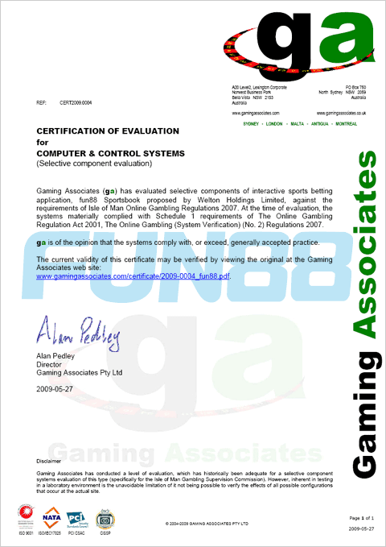

公司简介
乐天堂(FUN88) 是由Welton Holdings LTD.运营并于2008年6月正式注册成立，并获得拥有菲律宾最具权威的First Cagayan博彩运营牌照。卡加延博彩管理局是国际博彩资源协会认可的亚洲首个和唯一一个交互博彩管理体系；我们致力于为会员创造安全、诚信、可靠的博彩环境，以保证能够提供世界一流的服务。

乐天堂(FUN88) 现支持中文、英文、泰文、越南文、印尼文和韩文服务；也提供最优惠的促销和奖励计划。我们拥有24/7全天候客户服务团队，以确保能在第一时间处理客户的需求和解答疑问。
乐天堂(FUN88) 与世界顶级网络安全审核系统IOVATION合作，为会员提供最可靠的信息隐私保密措施，您的资金账户、个人信息将受到更严密的保护，让玩家能在乐天堂真正放心无忧游戏，乐在其中。
点击这里了解更多IOVATION相关资讯。
我们为会员提供有最丰富游戏产品、最全面的投注类型、最佳的客户服务和最便捷的支付方案。
娱乐先锋
乐天堂(FUN88)也是亚洲最早提倡“娱乐博彩”的网站，为客户提供有种类繁多的博彩游戏，以及倡导健康博彩和休闲娱乐并举的游戏体验。在上线时便隆重推出了以性感健康、快乐运动为主题的全新娱乐品牌 - “乐天使”。我们曾邀请两岸三地，及东南亚地区多位知名模特、艺人参与拍摄，每期均有不同拍摄主题，运动、健康、时尚、节日等一应俱全。更有日本知名AV女星泷泽萝拉(水咲萝拉)倾情加盟。
更多乐天使详情，请点击这里
信誉典范
乐天堂(FUN88)于2009年喜获澳洲博彩协会认证资格证书。澳洲博彩协会做为一个国际范围内受到广泛认可的认证测试机构，乐天堂/FUN88获得本项认证，不仅证明游戏运营的公平性、安全性和可审核性，更让会员对乐天堂的信誉的认可和有了显著提升。
有关澳洲博彩协会的相关资讯，请访问这里

凭借其出色的经营和逐渐增长的影响力，乐天堂(FUN88)于同年10月成功申请获得了世界知名的博彩管理机构——(IOM)英国曼岛博彩委员会的认证牌照，并接受国际博彩领域最具权威性的认证监管。我们坚定支持其核心宗旨：防止博彩集团犯罪；保护青少年远离赌博；确保执牌公司能提供公平公正的服务，而玩家们能百分百收到彩金。
获得曼岛牌照表明了乐天堂具备雄厚的资金保障和良好的诚信度，其对游戏公平性的高度把关和对玩家利益的高度保障在国际范围内也被广泛认知，而这更意味着乐天堂会员的注册信息和银行账户的保密度得到了进一步的加强，从最大限度保障玩家利益。由此，乐天堂(FUN88) 正式成为亚洲博彩业的佼佼者和领航人。
有关(IOM)英国曼岛博彩委员会的相关资讯，请访问这里

辉煌时刻
乐天堂分别与伯恩利足球俱乐部、托特纳姆热刺足球俱乐部进行了合作。在英超2014-15赛季时成为伯恩利俱乐部球衣赞助商；在英超2013-14赛季与托特纳姆热刺俱乐部进行合作时，还全新开设了一家以专业体育博彩为主题的特色网站——热刺88，成为业界优秀合作的典范。2016年8月，乐天堂再次与托特纳姆热刺俱乐部签订了为期两年的合作关系，成为托特纳姆热刺俱乐部亚洲地区和拉丁美洲地区的官方投注合作伙伴。
2014年，乐天堂开始进军车坛并与兰博基尼合作创立了乐天堂赛车队（FUN88 RACING），还参加了2014亚洲GT系列赛。近期，乐天堂赛车队正在参加保时捷卡雷拉杯系列赛。
2015年，乐天堂开始涉足综合格斗（MMA）产业，并且和ONE Champion 冠军赛进行合作。
乐天堂品牌形象大使分别为：日本AV女优水咲萝拉、足界传奇罗比·福勒和两届NBA MVP（NBA最有价值球员奖）获得者史蒂夫·纳什。乐天堂的明星代言遍布各个行业，这更加证明了乐天堂的品牌实力和业界信誉。
八年历程
2016年，乐天堂(FUN88)已有八年的辉煌历程。自成立以来，乐天堂(FUN88) 秉承诚着"娱乐博彩"的服务理念，为广大会员提供优质的服务与全新的体验。每年乐天堂(FUN88) 还将在世界范围内举办各种客户活动，以搭建公司与广大会员沟通交流的平台，努力做到为会员提供专业化、高质量博彩服务的同时，也为会员带来高品质的娱乐享受。我们将继续以”诚信、可靠、性感、娱乐“为核心价值观，成为行业中最具影响力的领头羊。